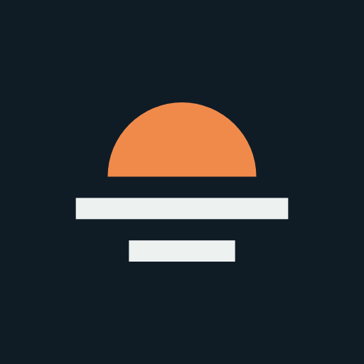

Sunzal Digital brand guide
The logo, colours, type and tone of voice that make Sunzal Digital look and sound like itself. Use these for the website, quotes, invoices, social profiles and email signatures.
Logo
The mark is a sun setting on the horizon, with its reflection in the water below. It reads at favicon size and gives the brand its warm accent. The wordmark is set in Archivo Semi Expanded and outlined, so it looks the same everywhere.





Give it room
Keep clear space around the logo at least the height of the sun on every side.
Keep it legible
Don't use the full logo smaller than 24px tall on screen or 8mm in print. Below that, use the mark on its own.
Don't redraw it
No stretching, recolouring, outlines, shadows or swapping the font. Use the files above as they are.
The sunset
The mark drawn big: an orange half-disc on a horizon bar, with a shorter reflection bar below. Use it once per piece, at the moment you want people to act, such as the contact section of the website or the last page of a proposal. Never as a background pattern, and never with gradients.
Colour
Ink and glass do most of the work. Ink owns whole sections (the work, the close, the footer), and sun appears where you want action: the main buttons and the sunset.
Headings, body text, dark sections.
Main background. Cool, like the edge of a pane of glass.
Logo and main buttons on light backgrounds, with white text.
The sun on dark backgrounds, with ink text on top.
Secondary text and "digital" in the logo.
Dividing lines and borders on glass.
Type
One family, Archivo, in two widths. It's free from Google Fonts, so it works in Google Docs, Canva and on any computer.
Semi Expanded, Bold (700) for headlines, names and buttons. The wide, sturdy letters are what make the brand recognisable.
Normal width, Regular (400) for reading, Medium (500) and SemiBold (600) for labels and emphasis.
Voice
Write like Matt talks to a client on site: plain, friendly and direct. First person ("I"), not a faceless "we".
Sounds like us
- "I'll get back to you with some ideas and a clear price."
- "Most of your customers find you on their phone."
- "No agency layers, no jargon, no surprise invoices."
Doesn't
- "We leverage cutting-edge digital solutions."
- "Unlock your brand's full potential."
- Made-up statistics, or promises about rankings and results.